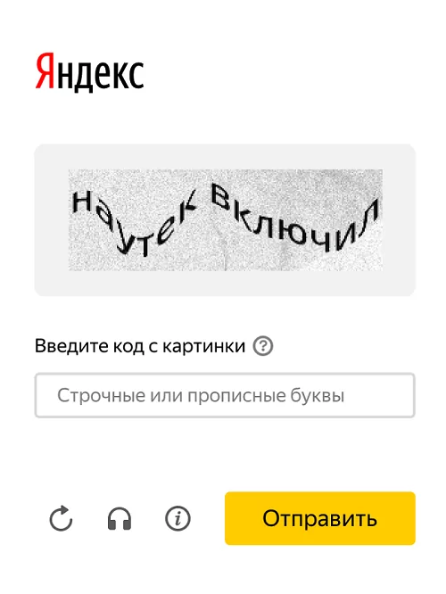

Заработок на капче

Проект RuCaptcha предлагает пользователям возможность зарабатывать деньги, решая капчи (текстовые и
графические задачи, используемые для определения, что пользователь не является роботом). Вот пошаговая
инструкция, как начать зарабатывать на этом проекте:
Шаг 1: Регистрация на RuCaptcha
- Перейдите на сайт
[RuCaptcha]
.
- Нажмите на кнопку "Регистрация" и заполните форму.
- Подтвердите регистрацию, перейдя по ссылке, отправленной на ваш электронный адрес.
Шаг 2: Настройка и установка программного обеспечения
- На компьютере:
- Скачайте и установите клиентское приложение с сайта RuCaptcha.
- Войдите в систему, используя свои учетные данные.
- На мобильном устройстве:
- Загрузите мобильное приложение RuCaptcha из Google Play или App Store.
- Войдите в приложение, используя свои учетные данные.
Шаг 3: Начало работы
- Запуск клиента: Запустите установленное приложение.
- Решение капч:
- Вам будут показаны изображения с текстом или задания на распознавание объектов.
- Введите текст или выберите правильные изображения и отправьте результаты.
Шаг 4: Оплата и вывод средств
- Оплата за каждую капчу:
- Размер оплаты зависит от сложности капчи и текущего спроса на выполнение таких заданий.
- Система автоматически начисляет оплату за каждую правильно решенную капчу.
- Вывод средств:
- Перейдите в раздел "Вывод средств" на сайте или в приложении.
- Выберите подходящий способ вывода: электронные кошельки (Qiwi, Яндекс.Деньги (YooMoney), WebMoney,
Payeer и другие), банковская карта и т.д.
- Минимальная сумма для вывода обычно составляет 15-20 рублей.
Советы для увеличения заработка
Качественный контент:
Всегда стремитесь создавать уникальные и полезные тексты. Это ключевой фактор
для получения положительных отзывов и повторных заказов.
- Работайте быстро и точно: Чем быстрее и точнее вы решаете капчи, тем больше сможете заработать.
- Работайте в периоды высокого спроса: В определенные времена суток спрос на решение капч выше, и
оплата тоже увеличивается.
- Используйте реферальную программу: Приглашайте новых пользователей по своей реферальной ссылке и
получайте процент от их заработка.
- Следите за рейтингом: Постарайтесь минимизировать количество ошибок, чтобы поддерживать высокий
рейтинг и не быть заблокированным.
Дополнительные возможности
- Автоматическое решение капч: Некоторые капчи могут решаться автоматически с помощью специальных
инструментов и скриптов, разрешенных платформой. Это может увеличить ваш доход.
- Становитесь работодателем: Если вам нужно решать капчи для вашего проекта, вы можете создать задания
для других пользователей.
Работа на RuCaptcha требует терпения и внимательности, но с правильным подходом и постоянством вы сможете
получать стабильный дополнительный доход.